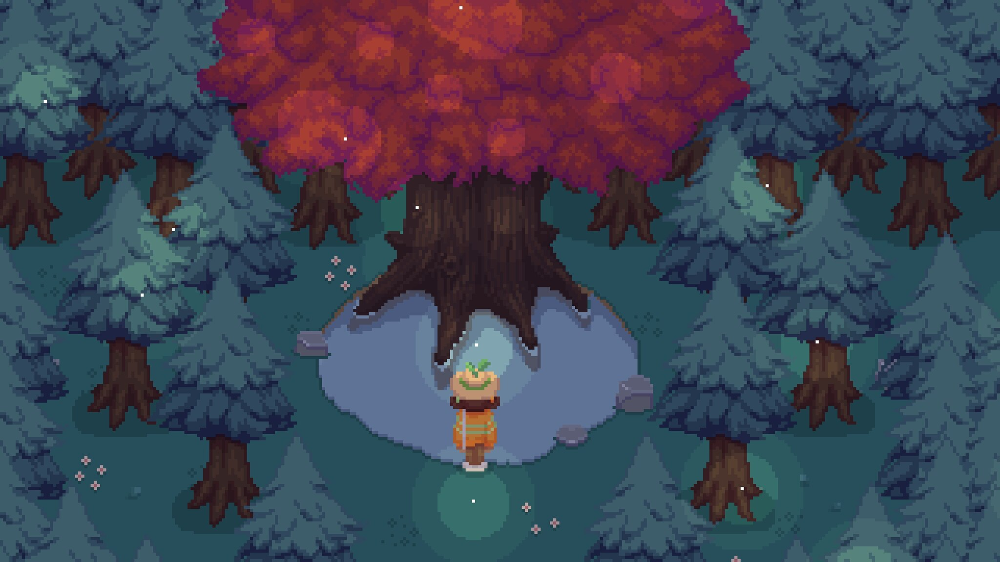
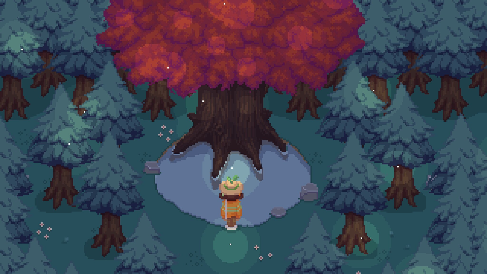

Garage sale is the first, and longest, game development project I've worked on thus far! What started out as a small bitsy project has grown into a years-long endeavor. We released the game last year, which you can check out on this Steam page! I worked as the lead artist for the project, as well as a designer and writer.
For me, Garage Sale has been above all an exercise in character design. As a game centered around community, Garage Sale's primary charm and intrigue comes from the town's cast of quirky inhabitants (both human and anthropomorphic!). This presented both an opportunity and a challenge for designing our characters. For many of these characters, I workshopped their personalities and roles in Garage Sale's story as well as creating their visual designs and sprites. This allowed me to view these characters more hollistically, and forced me to think more about how I could make these characters' personalities shine through in their sprites, even in a 32x32 (or 16x32!) canvas size. When creating the visual designs for characters, I tried to keep the designs simple and cute while still conveying the attitude and depth of each subject. Just a few of these sprites are shown below!
I also worked on some of Garage Sale's environments! Gameplay-wise, Garage Sale is heavily exploration-based, so the places you navigate are hugely important in conveying the game's story to the player and making them feel immersed in the town of Lettuce Village. I put extra care in crafting environments that fit with the cozy atmosphere of the game while adding depth to the town's lore and character. I found that designing these spaces helped me better contribute to the game's dialogue and gameplay surrounding these areas as well (and vice-versa)!
 
